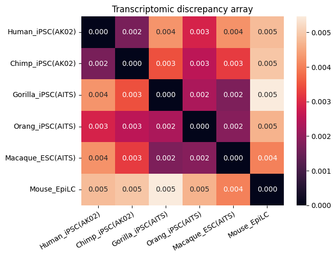
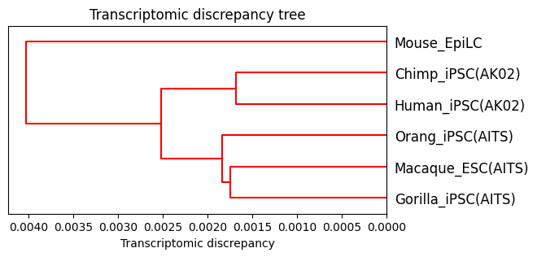
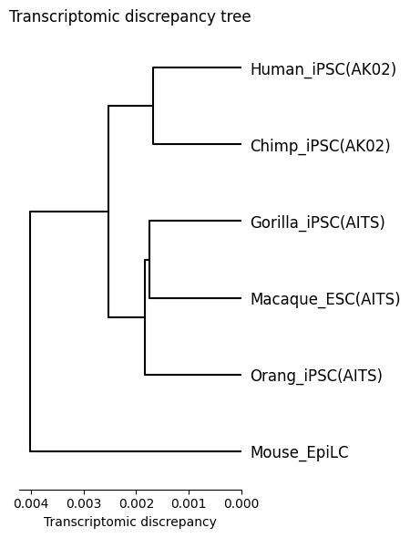

Dataset 2
Please extract data.zip into the directory “data”
[1]:
# data_option = "dataset1"
data_option = "dataset2"
Initial setup
[2]:
from speciesot import configure_platform, Config, Data, SpeciesOT
[3]:
configure_platform() # For macOS with Apple Silicon
# configure_platform("gpu") # For Linux or WSL2 with an NVIDIA GPU
# configure_platform("cpu") # For other platforms
JAX is configured to use: METAL
Computational parameters
[4]:
if data_option == "dataset1":
mask_option = "time_series_data"
threshold = 3.0
threshold_surer = 3.5
high_epsilon = 0.01
elif data_option == "dataset2":
mask_option = "one_time_point_data"
threshold = 1.4
threshold_surer = 2.5
high_epsilon = 0.1
[5]:
iterations = 1000
threshold_eps = 1e-4
low_epsilon = 0.0
threshold_tol = 3.0
[6]:
if data_option == "dataset1":
species = ["human", "macaque", "mouse"]
species_pairs = []
species_labels = ["Human", "Macaque", "Mouse"]
elif data_option == "dataset2":
species = ["human", "chimpanzee", "gorilla", "orangutan", "macaque", "mouse"]
species_pairs = []
species_labels = [
"Human_iPSC(AK02)",
"Chimp_iPSC(AK02)",
"Gorilla_iPSC(AITS)",
"Orang_iPSC(AITS)",
"Macaque_ESC(AITS)",
"Mouse_EpiLC",
]
Initialize the Config() class
[7]:
if data_option == "dataset1":
config = Config(
"dataset1",
"drop",
"distinct",
"auto",
"euclidean",
"original",
"fixed", # "min" for exploring minimum converging varepsilon_min
mask_option,
iterations,
threshold_eps,
low_epsilon,
high_epsilon,
threshold_tol,
threshold,
threshold_surer,
species=species,
species_pairs=species_pairs,
species_labels=species_labels,
)
elif data_option == "dataset2":
config = Config(
"dataset2",
"drop",
"distinct",
"auto",
"euclidean",
"original",
"fixed", # "min" for exploring minimum converging varepsilon_min
mask_option,
iterations,
threshold_eps,
low_epsilon,
high_epsilon,
threshold_tol,
threshold,
threshold_surer,
species=species,
species_pairs=species_pairs,
species_labels=species_labels,
)
Initialize the Data() class
[8]:
data = Data(config)
Read CSV file
[9]:
data = data.read_csv()
Geometrization steps (noise reduction and total count normalization)
[10]:
data = data.normalization()
start RECODE for scRNA-seq data
end RECODE for scRNA-seq
log: {'seq_target': 'RNA', '#significant genes': np.int64(16535), '#non-significant genes': np.int64(15612), '#silent genes': np.int64(0), 'ell': np.int64(65), 'Elapsed time': '0h 0m 8s 162ms', 'solver': 'full'}
start RECODE for scRNA-seq data
end RECODE for scRNA-seq
log: {'seq_target': 'RNA', '#significant genes': np.int64(15569), '#non-significant genes': np.int64(12952), '#silent genes': np.int64(0), 'ell': np.int64(32), 'Elapsed time': '0h 0m 1s 708ms', 'solver': 'full'}
start RECODE for scRNA-seq data
end RECODE for scRNA-seq
log: {'seq_target': 'RNA', '#significant genes': np.int64(15118), '#non-significant genes': np.int64(14736), '#silent genes': np.int64(0), 'ell': np.int64(66), 'Elapsed time': '0h 0m 10s 766ms', 'solver': 'full'}
start RECODE for scRNA-seq data
end RECODE for scRNA-seq
log: {'seq_target': 'RNA', '#significant genes': np.int64(14588), '#non-significant genes': np.int64(14096), '#silent genes': np.int64(0), 'ell': np.int64(84), 'Elapsed time': '0h 0m 9s 622ms', 'solver': 'full'}
start RECODE for scRNA-seq data
end RECODE for scRNA-seq
log: {'seq_target': 'RNA', '#significant genes': np.int64(14746), '#non-significant genes': np.int64(11152), '#silent genes': np.int64(0), 'ell': np.int64(119), 'Elapsed time': '0h 0m 10s 795ms', 'solver': 'full'}
start RECODE for scRNA-seq data
end RECODE for scRNA-seq
log: {'seq_target': 'RNA', '#significant genes': np.int64(12010), '#non-significant genes': np.int64(9099), '#silent genes': np.int64(0), 'ell': np.int64(43), 'Elapsed time': '0h 0m 2s 299ms', 'solver': 'full'}
Geometrization step (gene selection using human transcription factors)
[11]:
data = data.read_tf()
Initialize the SpeciesOT() class
[12]:
spe_ot = SpeciesOT(data)
Geometrization step (filtering)
[13]:
spe_ot = spe_ot.preprocessing()
Geometrization step (distance matrix computation)
[14]:
spe_ot = spe_ot.calculate_gene_distance_matrix()
Entropically regularized Gromov-Wasserstein optimal transport
[15]:
spe_ot = spe_ot.gromov_wasserstein_ot()
Platform 'METAL' is experimental and not all JAX functionality may be correctly supported!
WARNING: All log messages before absl::InitializeLog() is called are written to STDERR
W0000 00:00:1762787318.943704 2416463 mps_client.cc:510] WARNING: JAX Apple GPU support is experimental and not all JAX functionality is correctly supported!
I0000 00:00:1762787318.954833 2416463 service.cc:145] XLA service 0x35624e1b0 initialized for platform METAL (this does not guarantee that XLA will be used). Devices:
I0000 00:00:1762787318.954851 2416463 service.cc:153] StreamExecutor device (0): Metal, <undefined>
I0000 00:00:1762787318.956100 2416463 mps_client.cc:406] Using Simple allocator.
I0000 00:00:1762787318.956111 2416463 mps_client.cc:384] XLA backend will use up to 103078739968 bytes on device 0 for SimpleAllocator.
Metal device set to: Apple M3 Max
systemMemory: 128.00 GB
maxCacheSize: 48.00 GB
epsilon = 0.1000000 converged
Normalized optimal transport plan
[16]:
spe_ot = spe_ot.normalize_otp()
Transcriptomic discrepancy
[17]:
spe_ot.plot_transcriptomic_discrepancy()


Chained Processing
[18]:
data2 = Data(config).read_csv().normalization().read_tf()
start RECODE for scRNA-seq data
end RECODE for scRNA-seq
log: {'seq_target': 'RNA', '#significant genes': np.int64(16535), '#non-significant genes': np.int64(15612), '#silent genes': np.int64(0), 'ell': np.int64(65), 'Elapsed time': '0h 0m 8s 811ms', 'solver': 'full'}
start RECODE for scRNA-seq data
end RECODE for scRNA-seq
log: {'seq_target': 'RNA', '#significant genes': np.int64(15569), '#non-significant genes': np.int64(12952), '#silent genes': np.int64(0), 'ell': np.int64(32), 'Elapsed time': '0h 0m 1s 944ms', 'solver': 'full'}
start RECODE for scRNA-seq data
end RECODE for scRNA-seq
log: {'seq_target': 'RNA', '#significant genes': np.int64(15118), '#non-significant genes': np.int64(14736), '#silent genes': np.int64(0), 'ell': np.int64(66), 'Elapsed time': '0h 0m 12s 065ms', 'solver': 'full'}
start RECODE for scRNA-seq data
end RECODE for scRNA-seq
log: {'seq_target': 'RNA', '#significant genes': np.int64(14588), '#non-significant genes': np.int64(14096), '#silent genes': np.int64(0), 'ell': np.int64(84), 'Elapsed time': '0h 0m 9s 816ms', 'solver': 'full'}
start RECODE for scRNA-seq data
end RECODE for scRNA-seq
log: {'seq_target': 'RNA', '#significant genes': np.int64(14746), '#non-significant genes': np.int64(11152), '#silent genes': np.int64(0), 'ell': np.int64(119), 'Elapsed time': '0h 0m 10s 696ms', 'solver': 'full'}
start RECODE for scRNA-seq data
end RECODE for scRNA-seq
log: {'seq_target': 'RNA', '#significant genes': np.int64(12010), '#non-significant genes': np.int64(9099), '#silent genes': np.int64(0), 'ell': np.int64(43), 'Elapsed time': '0h 0m 2s 218ms', 'solver': 'full'}
[19]:
spe_ot2 = (
SpeciesOT(data2)
.preprocessing()
.calculate_gene_distance_matrix()
.gromov_wasserstein_ot()
.normalize_otp()
.plot_transcriptomic_discrepancy()
)
epsilon = 0.1000000 converged


Differential expression analysis and selection of Wnt-related genes
Discover genes differentially expressed between the AK02 and AITS culture conditions
[20]:
import numpy as np
import pandas as pd
from scipy.stats import ttest_ind
from statsmodels.stats.multitest import multipletests
# Group by condition
spe_to_condition = {
spe_ot.species[0]: "AK02",
spe_ot.species[1]: "AK02",
spe_ot.species[2]: "AITS",
spe_ot.species[3]: "AITS",
spe_ot.species[4]: "AITS",
spe_ot.species[5]: "neither", # excluded
}
condition_to_dfs = {"AK02": [], "AITS": []}
for spe, df in spe_ot.plot_normalized_log_select_preprocessed_masked.items():
cond = spe_to_condition.get(spe)
if cond in condition_to_dfs:
condition_to_dfs[cond].append(df)
if not condition_to_dfs["AK02"] or not condition_to_dfs["AITS"]:
raise ValueError("Missing data for one or both conditions.")
# Concatenate and align
ak02_df = pd.concat(condition_to_dfs["AK02"])
aits_df = pd.concat(condition_to_dfs["AITS"])
common_genes = ak02_df.columns.intersection(aits_df.columns)
ak02_df, aits_df = ak02_df[common_genes], aits_df[common_genes]
# Statistics
pvals, log2fc = [], []
for g in common_genes:
x, y = ak02_df[g].dropna(), aits_df[g].dropna()
_, p = ttest_ind(x, y, equal_var=False)
pvals.append(p)
log2fc.append(np.log2(x.mean() + 1e-6) - np.log2(y.mean() + 1e-6))
# Multiple testing
padj = multipletests(pvals, method="fdr_bh")[1]
# Results
results_df = pd.DataFrame(
{"gene": common_genes, "log2FC": log2fc, "pval": pvals, "padj": padj}
)
# Significant genes
sig = results_df.query("padj < 0.05 and abs(log2FC) > 1").sort_values("padj")
genes_AK02 = sig.query("log2FC > 1")["gene"].tolist()
genes_AITS = sig.query("log2FC < -1")["gene"].tolist()
display(results_df.head())
print("Genes higher in AK02:", genes_AK02)
print("Genes higher in AITS:", genes_AITS)
| gene | log2FC | pval | padj | |
|---|---|---|---|---|
| 0 | ADNP | 0.044285 | 7.651345e-38 | 9.175330e-38 |
| 1 | ADNP2 | 0.043396 | 9.499142e-47 | 1.164218e-46 |
| 2 | AEBP1 | -0.362036 | 0.000000e+00 | 0.000000e+00 |
| 3 | AEBP2 | 0.076010 | 3.565237e-33 | 4.227611e-33 |
| 4 | AHCTF1 | -0.230504 | 3.236920e-277 | 5.916623e-277 |
Genes higher in AK02: ['TCFL5', 'ZBTB37', 'ZBTB47', 'ZBTB8B', 'ZFP14', 'ZMAT4', 'ZNF138', 'ZNF165', 'ZNF202', 'ZNF25', 'ZNF251', 'ZBTB22', 'ZBTB20', 'ZBTB12', 'ZSCAN9', 'SNAI1', 'SOX21', 'SOX9', 'SP110', 'SREBF1', 'ZNF316', 'STAT6', 'ZXDC', 'TEF', 'TFEB', 'THAP8', 'TP73', 'TSHZ2', 'TSHZ3', 'ZNF333', 'ZNF337', 'ZNF692', 'ZNF71', 'ZNF726', 'ZNF764', 'ZNF771', 'ZNF778', 'ZNF688', 'ZNF784', 'ZNF793', 'ZNF823', 'ZSCAN30', 'ZNF844', 'ZNF880', 'ZNF883', 'ZNF786', 'ZNF599', 'ZNF589', 'ZNF385A', 'ZNF385B', 'ZNF397', 'ZNF417', 'ZNF449', 'ZSCAN31', 'ZNF500', 'ZNF514', 'ZNF524', 'ZNF546', 'ZNF563', 'ZNF573', 'ZNF585A', 'ZNF519', 'SIX3', 'SOX15', 'RORB', 'FBXL19', 'FEZF1', 'FOXI3', 'HIF3A', 'IRF2', 'IRF7', 'EMX1', 'ARNTL', 'BATF2', 'BCL6B', 'CASZ1', 'CC2D1A', 'CCDC17', 'CENPBD1', 'CSRNP3', 'CXXC4', 'DBP', 'DEAF1', 'ELF1', 'ELF3', 'ZNF891', 'NOTO', 'NR1D2', 'NR1H3', 'KLF15', 'POU3F1', 'POU5F2', 'PPARA', 'PURG', 'RARG', 'RORA', 'PBX2', 'NHLH1', 'NFATC4', 'LHX1', 'MAF', 'L3MBTL4', 'ZFP2', 'MLXIPL', 'MTERF2', 'MZF1', 'POU2F3', 'IRX1', 'PLAGL1', 'ZBED6', 'ZNF491', 'ZNF676', 'LHX5', 'MEF2C', 'ZNF662', 'SIX6', 'MAFA', 'ZNF843', 'NR4A2', 'PAX6', 'GLIS3', 'ESRRG', 'EMX2', 'LMX1A', 'SIX2', 'TBX3', 'NR2F2', 'VAX1']
Genes higher in AITS: ['ZEB1', 'ZIC4', 'ZNF132', 'ZNF208', 'ZNF215', 'ZNF229', 'ZNF239', 'SNAI2', 'SOX8', 'EGR3', 'TWIST1', 'TBX15', 'ZNF341', 'ZNF697', 'ZNF728', 'ZNF792', 'ZNF878', 'MESP2', 'ZNF596', 'ZNF516', 'ZNF548', 'ZNF559', 'ZNF569', 'ETV4', 'FOSL1', 'FOSL2', 'FOXP3', 'GBX2', 'ETV2', 'ZNF285', 'HES2', 'HES4', 'HEY1', 'HEY2', 'HIC1', 'HIVEP3', 'GTF2IRD2B', 'ETS1', 'ASCL2', 'BHLHE40', 'ZNF473', 'ZNF541', 'ELK3', 'CREB5', 'ZSCAN23', 'KLF16', 'NPAS2', 'NPAS3', 'NR5A2', 'OTX1', 'SP140', 'RFX4', 'NME2', 'LEF1', 'LHX2', 'ZNF257', 'KLF4', 'NFKB1', 'MAFF', 'MIXL1', 'NANOG', 'MECOM', 'KLF9', 'TFCP2L1', 'ZNF177', 'ARID5B', 'STAT4', 'DMBX1', 'IRF4', 'PAX5', 'GSC']
Expression levels of Wnt-related genes
[21]:
import matplotlib.pyplot as plt
import seaborn as sns
marker_genes = [
"CXXC4",
"PPARA",
"SIX3",
"SOX9",
"SREBF1",
"RARG",
"RORA",
]
labels = [
"Human iPSC\n(AK02)",
"Chimpanzee iPSC\n(AK02)",
"Gorilla iPSC\n(AITS)",
"Orangutan iPSC\n(AITS)",
"Macaque ESC\n(AITS)",
"Mouse EpiLC",
]
# Flatten
data = []
for spe in spe_ot.species[:-1]:
for g in marker_genes:
if g in spe_ot.plot_normalized_log[spe]:
for v in spe_ot.plot_normalized_log[spe][g]:
data.append({"Gene": g, "Species": spe, "Expression": v})
df = pd.DataFrame(data)
# Z-score
df["Expression"] = df.groupby("Gene")["Expression"].transform(
lambda x: (x - x.mean()) / x.std(ddof=0)
)
df["Gene"] = df["Gene"].str.upper().apply(lambda g: f"$\\it{{{g}}}$")
# Plot
plt.figure(figsize=(16, 8))
sns.boxplot(
data=df,
x="Species",
y="Expression",
hue="Gene",
palette="Set2",
showcaps=True,
showfliers=False,
gap=0.2,
)
ax = plt.gca()
ax.legend(fontsize=18)
ax.set_xticks(range(len(labels[:-1])))
ax.set_xticklabels(labels[:-1], fontsize=24)
ax.tick_params(axis="y", labelsize=20)
ax.yaxis.grid(True)
ax.set_axisbelow(True)
plt.title("Expression levels of Wnt-related genes", fontsize=24)
plt.ylabel("Z-score of log normalized expression", fontsize=24)
plt.ylim(-2.5, 6.5)
plt.xlabel("")
plt.tight_layout()
plt.show()